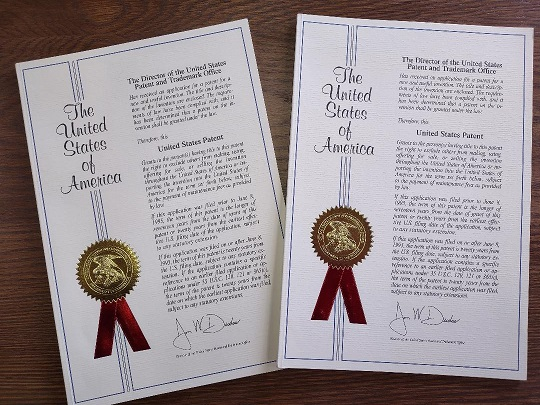

Microwave Tissue Processing
The present invention is a method for the rapid processing of a tissue sample. The process includes the four general steps of fixation, dehydration, clearing, and impregnation (infiltration). In the preferred embodiment, more than one of the steps can be performed simultaneously using a single solution. After collecting the tissue sample, the first step of the processing method is to enclose the tissue sample in a cassette which is then placed in a cassette rack, as is known in the art. The rack is placed in a processing container with conductive leads on the container walls. The container is placed in the processing unit and connected to the electrical power source. The rack is oriented in such a manner as to expose the openings in the cassettes with the flow of electrical current between the conductive leads. The container is filled with the proper processing solution or material into which is added a conductive agent to facilitate the resistive flow of electricity through the tissue specimen. It has been determined that a conductive polymer acts as the best conductive agent. During the fixation, dehydration, clearing, and impregnation steps, the present invention uses a combination of ohmic and microwave energy to heat the sample to achieve rapid tissue processing and thereby reduce the time the tissue is exposed to heat.
